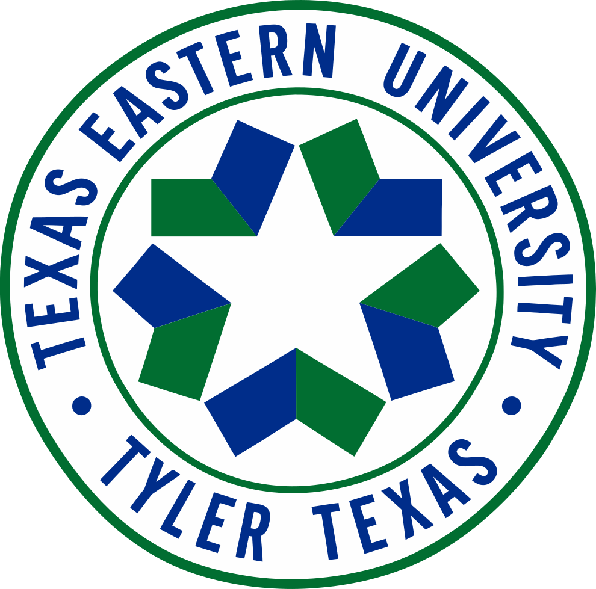

Created in 1971. The first students enrolled in 1973. Its blue-and-green geometric seal placed a white star in negative space.
Renamed in 1975. The name changed, but the same basic geometric star emblem survived the transition.
The school joined the UT System in 1979. The formal UT seal followed, and the orange UT/TYLER Squaremark appeared in 1980.


1971–1975
TYLER STATE COLLEGE: THE ORIGINAL IDENTITY
UT Tyler officially began on June 10, 1971, as Tyler State College. It was created as an upper-division institution serving juniors, seniors and graduate students, and its first students enrolled in 1973.
Its early emblem looks almost nothing like modern UT Tyler. Alternating blue-and-green geometric forms circle an empty center. Look closely and the empty space itself becomes the star.
The star is not drawn. It is created by the shapes around it.
That makes the mark feel unmistakably 1970s, but the negative-space idea still works more than half a century later.
1975–1979
NEW NAME. SAME SYMBOL.
In 1975, the Texas Legislature renamed Tyler State College Texas Eastern University. The following year, classes began on the permanent campus that UT Tyler still occupies today.
But compare the two marks. The words around the outside changed. The center did not.
The same blue-and-green geometry and white negative-space star survived the rename.
In other words, the university changed its name before it changed its identity.
For four years, a university called Texas Eastern University existed in Tyler — long enough to move onto the permanent campus and establish a visual identity, but briefly enough that the name now feels almost forgotten.
"THE UNIVERSITY CHANGED ITS NAME BEFORE IT CHANGED ITS IDENTITY."
1979
THE UNIVERSITY OF TEXAS AT TYLER ARRIVES
In 1979, the 66th Texas Legislature made Texas Eastern University a component of The University of Texas System. The change took effect September 1, and the school became The University of Texas at Tyler.
The new affiliation brought a different visual language. The formal university seal traded the abstract 1970s geometry for the traditional UT shield, open book, Texas star, wreath and the Latin motto Disciplina Praesidium Civitatis.
This seal is different from a marketing logo. It is a formal institutional mark — the kind of identity used for official and ceremonial purposes — but visually it made the change unmistakable.
Tyler's young regional university was now part of the University of Texas System.
1980
THE SQUAREMARK
Then came the mark a lot more East Texans will recognize.
A massive UT. A white star inside the U. One word underneath: TYLER.
Federal trademark records list the first use of the UT TYLER design as August 1980. The filing describes the same mark shown here: a large outlined “UT,” a star inside the U-shaped left portion, and “TYLER” below.
Compared with the seals that came before it, the Squaremark was almost brutally simple. And it worked.
When UT Tyler prepared another major branding change in 2018, the Tyler Morning Telegraph still referred to the outgoing design as the university's old orange “squaremark.” What began in 1980 had become the UT Tyler identity remembered by generations of students and East Texans.
The Through-Line
FOUR MARKS. THREE NAMES. NINE YEARS.
That may be the strangest part of the story. Most of this transformation happened in less than a decade.
Tyler State College was created in 1971.
Texas Eastern University arrived in 1975.
The University of Texas at Tyler arrived in 1979.
The Squaremark followed in 1980.
The first two marks belong to a young East Texas university still figuring out what it was. The formal UT Tyler seal announced that it had joined something larger. The Squaremark gave the new name a bold identity of its own.
Before UT Tyler became the university Tyler knows today, it first had to become UT Tyler at all.
Sources
WHERE THE HISTORY COMES FROM
This entry is built from official UT Tyler history, UT System material, federal trademark records and contemporary local reporting.
- UT Tyler — 1970s: A University Is Born
- UT Tyler — University Timeline
- The University of Texas System — Seal of the University
- USPTO / TTAB — UT TYLER design mark record
- Tyler Morning Telegraph — 2018 UT Tyler branding change
FAQ